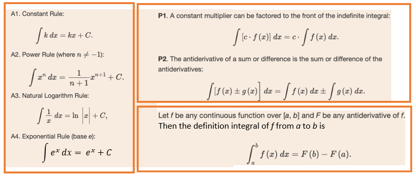
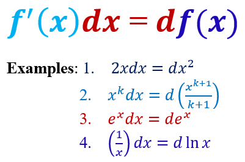
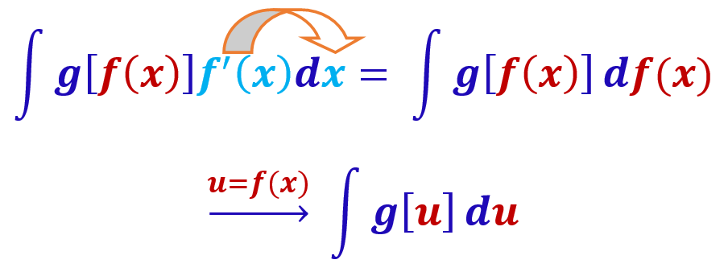
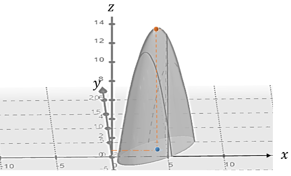
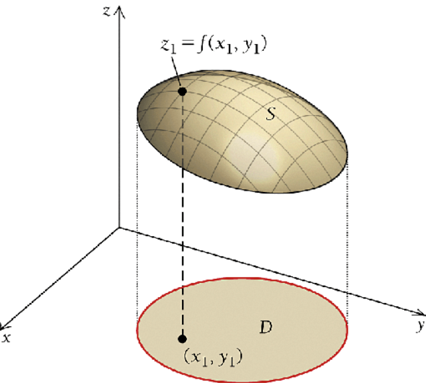
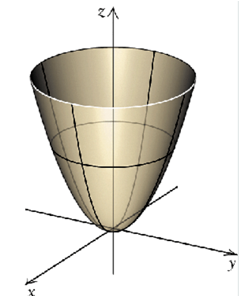
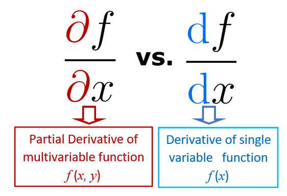
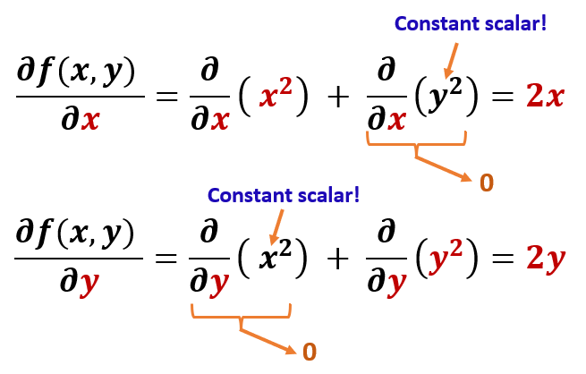

Topic 15 Integration by Substitution and Multivariable Functions
As usual, we first review the rules of derivatives.
- Basic Rules and Properties of Integrals.

- Notations of Differentials 
The last example assumes that \(x > 0\).
15.1 Integration by Substitution
Integration by substitution is analogous to the chain rule in derivatives. The following formula explains the logic and steps for finding the U-substitution.

15.1.1 Examples of Substitution
The next few examples demonstrate how to find the U-substitution: \(u = f(x)\).
Example 1: Find the following indefinite integrals.
\[ \text{1.}~~ \int2xe^{x^2}dx~~~~~~~~~~\text{2.}~~ \int3x^2(x^3+1)^{10}dx ~~~~~~~~~~\text{3.} \int\frac{2x}{(x^2+1)^5}dx~~~~~~~~~~\text{4.}~~ \int\frac{\ln(3x)}{x}dx \]
Solution. In the following solutions, we use substitution during the integration. The substitutions use the fact \([u(x)]^\prime dx = d u(x)\). With this U-substitution, the variable in the original integrand is changed to \(u\), and the integral will be based on \(u\). At the very end, we need to do backward substitution so that the result only involves the original variable.
In the following derivation, the U-substitution is \(u = x^2\). \[ \int2xe^{x^2}dx = \int e^{x^2} (2x)dx = \int e^{x^2}d(x^2) \stackrel{u = x^2}{=} \int e^udu = e^u+C \stackrel{u = x^2}{=} e^{x^2} + C \]
The following derivation indicates that the U-substitution is \(u = x^3 + 1\).
\[ \int3x^2(x^3+1)^{10}dx = \int(x^3+1)^{10} (3x^2)dx = \int(x^3+1)^{10}dx^3 = \int(x^3+1)^{10}d(x^3+1) \]
\[ \stackrel{u = (x^3+1)}{=} \int u^5du = \frac{u^{5+1}}{5+1} + C = \frac{u^6}{6}+C \stackrel{u = (x^3+1)}{=} \frac{(x^3+1)^6}{6} + C. \]
- The given integrand has a fractional form, we need to reexpress it into the form of the power function and then find the U-substitution.
\[ \int\frac{2x}{(x^2+1)^5}dx \stackrel{\text{simplification}}{=} \int (x^2+1)^{-5}(2x)dx = \int (x^2+1)^{-5}dx^2 \] \[ =\int (x^2+1)^{-5}d(x^2+1) \stackrel{u=x^2+1}{=} \int u^{-5} du = \frac{u^{-5 + 1}}{-5+1}+C = -\frac{(x^2+1)^{-4}}{4}+C. \]
- Note that \([\ln (x)]^\prime = \frac{1}{x}\) and \(\ln (3x)]^\prime = \frac{(3x)^\prime}{3x}=\frac{1}{x}\).
\[ \int\frac{\ln(3x)}{x}dx =\int \ln (3x) \left( \frac{1}{x}\right)dx = \int \ln (3x) \left( \frac{1}{3x}\right)d(3x) \] \[ = \stackrel{u=3x}{=} \int \ln (u) \left( \frac{1}{u}\right)du = \int \ln(u) d[\ln(u)] \stackrel{v=\ln(u)}{=}\int vdv=\frac{v^2}{2}+C \]
\[ =\frac{(\ln u)^2}{2} + C = \frac{[\ln(3x)]^2}{2} + C. \]
Notice that two substitutions were used in this problem.
15.1.2 Business and Economics Applications
The following few examples show how the substitution method is used in business and economics applications.
Example 2: Profit from marginal profit. A fir has the marginal function
\[ \frac{dP(x)}{dx} = \frac{3000(3-x)}{(x^2-6x+10)^2} \] where \(P(x)\) is the profit earned at \(x\) dollars per unit. Find the total-profit function given that \(P = \$1500\) at \(x = \$3\). That is \(P(3) = 1500\).
Solution: The objective is to find the total profit function \(P(x)\) from the marginal function that meets the condition \(P(3) = 1500\).
We first find the indefinite integral in the following
\[ P(x) = \int \frac{3000(3-x)}{(x^2-6x+10)^2} dx = \int \frac{1500(6-2x)}{(x^2-6x+10)^2} dx \] \[ = 1500\int \frac{6-2x}{(x^2-6x+10)^2} dx = 1500\int (x^2-6x+10)^{-2}d(6x-x^2) \] \[ =-1500\int (x^2-6x+10)^{-2}d(x^2-6x) = -1500\int (x^2-6x+10)^{-2}d(x^2-6x + 10) \]
\[ \stackrel{u=x^2-6x+10}{=} -1500 \int u^{-2}du = -1500\times \frac{u^{-2+1}}{-2+1} + C \] \[ = 1500u^{-1} + C = \frac{1500}{u} + C = \frac{1500}{x^2-6x + 10} + C. \] Note that \(P(3) = 1500\). This means
\[ \frac{1500}{3^2 - 6\times 3 + 10} + C = 1500 \] Therefore, \[ C = 1500 - \frac{1500}{3^2 - 6\times 3 + 10} = 1500 - \frac{1500}{1} = 0. \]
Therefore, the total profit function is \[ P(x) = \frac{1500}{x^2-6x + 10}. \]
Example 3: Cost from marginal cost. Bellyacher’s Home Ice Cream, Inc., determines that its marginal cost, in dollars per unit, is given by \[ \frac{dC(x)}{dx} = 25.765xe^{0.0035x^2} \] where \(x\) is the number of home ice cream makers produced. Find the total cost to produce 10 units.
Solution:
\[ C(x) = \int 25.765xe^{0.0035x^2} dx = \int \frac{25.765}{2}e^{0.0035x^2} (2x)dx \] \[ =\frac{25.765}{2} \int e^{0.0035x^2} dx^2 = \frac{25.765}{2} \int \frac{e^{0.0035x^2}}{0.0035}d(0.0035x^2) \] \[ \stackrel{u=0.0035x^2}{=} \frac{25.765}{2\times 0.0035}\int e^udu = 3680.714e^u +C = 3680.714e^{0.0035x^2} +C \] Assume that only the variable cost is considered in the marginal cost analysis. This means that the cost is 0 if no ice cream maker is manufactured, \(C(0) = 0\). Therefore, \(3680.714e^{0.0035\times 0^2} +C =0\), that is, \(C = -3680.714\). Hence, the total variable cost function is given by \[ C(x) = 3680.714e^{0.0035x^2} -3680.714 = 3680.714(e^{0.0035x^2}-1). \]
The total cost of producing 10 ice-cream makers is \(C(10) = 3680.714(e^{0.0035\times 10^2}-1) \approx \$1542.46\)
15.2 Motivariable Functions
Up to this point, all functions such as cost, revenue, profit, and other business functions we discussed involve only one variable. These single-variable functions are good since
Fly Straight, Inc., produces two types of golf balls: one type sells for $3 each and the other sells for $2 each. The total profit from manufacturing and selling x thousand $3 balls and y thousand $2 balls is given by
\[ P(x,y) = -2x^2 +2xy - y^2 + 12x - 4y - 7 \] 
How many golf balls of each type must be produced and sold to maximize the company’s profit?
We will revisit this example and show that the profit is maximized when producing 4000 type I and 2000 type II golf balls.
15.2.1 Definition and Geometry
A multivariable function is a function that has more than one independent variable. The above profit function is such an example.
Definition: A function of \(n\) variables assigns to each input of n ordered inputs, \((x_1, x_2, \cdots, x_n)\), called an \(n\)-tuple, exactly one output, \(f(x_1, x_2, \cdots, x_n)\). Any function of two or more input variables is called a function of several variables.
For a function of two variables, \(z = f(x, y)\), the corresponding graph is a surface in the three-dimensional space. The domain, \(D\), of a two-variable function is the set of points in the \(xy\)-plane for which \(z = f(x,y)\) is defined.

Example 3: Find the domain of a two-variable function: \(f(x,y) = x^2+ y^2\).
Solution: The domain of \(f(x,y)\) is the set of all ordered pairs \((x,y)\) on which \(f(x,y)\) is well-defined. In other words, the domain \(D\) is the set of all ordered tuples except for those that make \(f(x,y)\) undefined. Therefore, \(D = \{(x,y): x~\text{and}~y ~\text{are any real numbers.} \}\). The following figure demonstrates the part of the surface.

This is a circular paraboloid (a special case of elliptic paraboloid).
15.2.2 Partial Derivatives
We have developed various rules for the derivative of functions with a single variable. The same set of rules will be used in the derivatives of the function with several variables. The only difference is to take the derivative of the function for each variable - partial derivative.

For example, \(z = f(x, y)\) is a function with two independent variables \(x\) and \(y\). When taking the derivative of \(f(x,y)\), we take the derivative \(f(x,y)\) for \(x\) while assuming \(y\) to be a constant scalar and then take the derivative for \(y\) while treating \(x\) as a constant scalar.
Example 4: Find the partial derivatives of \(f(x,y) = x^2 + y^2\).
Solution: Note that when taking a partial derivative of \(f(x,y)\) for one variable, the other variables are treated as constant scalars!

Your Turn:
Find all first order partial derivatives of \(f(x,y) = xy\).
Find all first order partial derivatives of \(f(x,y) = x+\sqrt{y}\).
Find all first order partial derivatives of \(f(x,y) = e^(2x)+ \ln(1+y)\).